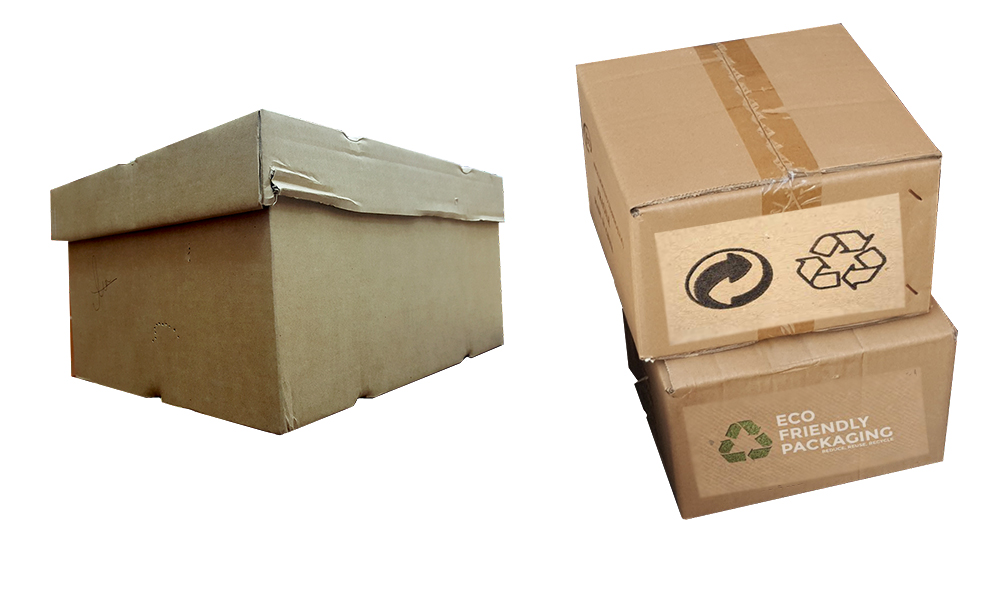

About Trystero: Our Eco Ethos
 Trysetero Delivery Company Delivers on point, on time without costing you the earth! Using a city fleet of Renault Electric Cars and a nationwide fleet of Toyota Hybrid Cars TryDC reduces the cost of our courier service to you the customer by half without impacting on the environment. We offer a bespoke range of moving services using our Telsa Trucks for moving large items for Art Galleries, Buisness Moves and Home Movers. Working cloesly with SEAI and ESB Networks TryDC is forefront in development of renewable and ethical business models.
Why Trystero
- We bring reduced cost eco-friendly deliveries to the planet
- We use hybrid and electric transport to make sure customers products get on time
- We engage our community and staff with ecofriendly practices in house.
- We source our packaging from ecofriendly sources and reduce waste
- In city centers we liaise with eco-friendly taxi companies to reduce wasteful journeys
- We reuse and recycle all packaging materials